Online introduction
RL without Tears,
An Online Introduction
This online introduction summarizes the main arguments of the paper in a companion-site form. It follows the paper's chapter structure and keeps the essential concepts, algorithms, and applications. The PDF remains the complete version for derivations, references, and full discussion.
Section 1
Introduction
Reinforcement learning is a general framework for learning from feedback. An agent makes decisions, receives signals from an environment, and improves its behavior over time. Although RL has traditionally been introduced through games, robotics, and control problems, the same idea has become central to modern LLM development [1].
Why RL for LLMs?
The paper begins from a simple observation: many capabilities expected from LLMs are easier to evaluate than to demonstrate token by token. Helpfulness, preference alignment, safety, reasoning correctness, and agent task success can all be expressed as feedback signals. RLHF uses this idea to align pretrained models with human preferences, while recent reasoning and agent systems extend RL toward learning from interaction and experience [3][2][12].
Intelligence, and its associated abilities, can be understood as subserving the maximisation of reward by an agent acting in its environment.
The Gap This Paper Fills
For NLP researchers, RL can be hard to approach because its standard notation often assumes a background in control or classical RL. Concepts such as value functions, policy gradients, advantages, reference policies, reward models, and PPO are frequently used in LLM papers but not always explained from an LLM perspective. This creates a gap between supervised-learning intuitions and the mathematical language of RL.
| Reader Question | How the Paper Answers It |
|---|---|
| How is an LLM a policy? | Map the prompt and generated prefix to a state, and the next token to an action. |
| Why use rewards instead of only demonstrations? | Rewards evaluate generated behavior when exact target outputs are hard to specify. |
| Why are value functions and advantages needed? | They reduce gradient variance and make policy optimization more stable. |
| Why do PPO, GRPO, and DPO matter? | They represent different ways to optimize policies from reward or preference feedback. |
Roadmap
The introduction then sets the scope of the paper. It first builds RL fundamentals in LLM terminology, then walks through policy-gradient training for LLMs. After that, it discusses improved reward modeling, advantage estimation, training efficiency, and direct preference optimization. The later sections show how the same RL framework extends to reasoning models, LLM-based agents, and multimodal models.
Map RL concepts to LLM training.
Build policy-gradient and PPO-style optimization.
Study rewards, advantages, efficiency, and DPO.
Apply RL to reasoning, agents, and multimodal models.
Section 2
Preliminaries: LLMs and Reinforcement Learning
The paper first establishes a common language between large language models and reinforcement learning. For LLM researchers, training is often introduced through supervised fine-tuning. For RL researchers, the basic objects are agents, states, actions, policies, rewards, values, and trajectories. The key idea of this section is that these two views can be aligned naturally [1].
2.1 Fundamentals of Large Language Models
A pretrained LLM is usually adapted to downstream tasks by supervised fine-tuning. Given an input sequence and a target output sequence, the model is trained to maximize the conditional likelihood of the target tokens. This objective is simple and effective because every token in the target sequence provides a direct training signal.
Here, \(\mathbf{x}=x_1,\ldots,x_m\) denotes the input sequence, such as an instruction or user prompt. \(\mathbf{y}=y_1,\ldots,y_n\) denotes the target output sequence, and \(y_i\) is the \(i\)-th target token predicted conditioned on the input and previous target tokens.
However, many behaviors required by modern LLMs are difficult to specify only through demonstrations. Helpfulness, safety, factuality, reasoning correctness, and tool-use success are often easier to judge than to imitate. This motivates the use of feedback signals that evaluate generated behavior rather than prescribe each target token.
From this perspective, supervised fine-tuning provides an initial policy, while reinforcement learning further adjusts the policy according to rewards. The model no longer learns only from what humans wrote. It also learns from which of its own generated behaviors are preferred or successful [2][3].
2.2 Fundamentals of Reinforcement Learning
In reinforcement learning, an agent interacts with an environment. At each step, the agent observes a state, selects an action according to a policy, receives a reward, and moves to a new state. The goal is to learn a policy that maximizes expected cumulative reward.
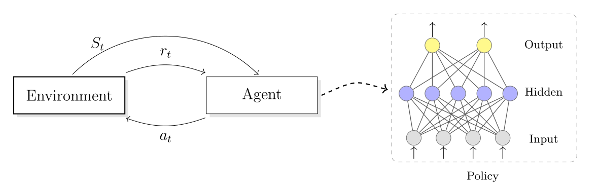
For LLMs, this framework can be reinterpreted in language-model terms. The LLM is the policy. The state is the prompt together with the generated prefix. The action is the next token in ordinary generation, or a higher-level action such as a tool call in agentic settings. The reward can come from humans, reward models, rules, verifiers, or environments.
This mapping is important because it removes an unnecessary barrier. RL is not limited to games, robotics, or control. It is a general framework for improving sequential decision-making with feedback. Since text generation is already sequential, LLM post-training can be naturally formulated as an RL problem.
| RL Term | Notation | LLM Interpretation | Typical Signal |
|---|---|---|---|
| Policy | \(\pi(a\mid s)\) | The LLM distribution over next tokens or higher-level actions. At token level, the policy is the model's conditional next-token distribution. | Log probabilities or probability ratios used by policy-gradient and PPO-style updates. |
| State | \(s=(x,y_{<t})\) | The information available before the next decision: the input prompt plus the generated prefix. | The context that conditions token generation, value prediction, reward evaluation, or tool-use decisions. |
| Action | \(a=y_t\) | The decision made by the model. In ordinary LLM generation this is a token; in agentic settings it may be a tool call or interaction step. | The sampled token, response segment, tool invocation, argument string, or final answer decision. |
| Reward | \(r_t,\ R(\tau)\) | A scalar signal that evaluates behavior. It may be assigned at each step or only after the full output or interaction finishes. | Human preference, AI feedback, learned reward model score, verifier result, rule-based check, or environment success signal. |
| Trajectory | \(\tau=(s_0,a_0,r_0,\ldots)\) | The sequence being evaluated: a completion, reasoning trace, multimodal generation path, or multi-turn agent interaction. | The unit over which cumulative reward, preference comparison, verifier success, or task outcome is measured. |
| Value | \(V(s),\ Q(s,a)\) | The expected future return from a state, or from a state after taking a particular action. | A critic or value head prediction used to form baselines and reduce gradient variance. |
Here, \(s=(x,y_{<t})\) denotes the current state, formed by the input prompt and previously generated tokens. \(a=y_t\) denotes the action, namely the next token selected by the LLM. \(V(s)\) denotes the expected discounted return starting from state \(s\), \(r_t\) is the reward at timestep \(t\), and \(\gamma\in[0,1]\) is the discount factor.
Section 3
An Example of Using RL to Train LLMs
The third section introduces the main mechanics of RL-based LLM training through a concrete example. The training process can be summarized as follows: sample outputs from the model, assign rewards to the outputs, estimate which decisions are better than expected, and update the model so that better outputs become more likely.
Generate outputs from the policy.
Evaluate outputs with rewards.
Compute values or advantages.
Optimize the policy with PPO-style constraints.
3.1 Policy Gradient
Policy gradient methods optimize the expected reward of a policy. In LLM training, the policy is the conditional distribution over generated tokens. Since it is impossible to enumerate all possible outputs, the expectation is estimated with sampled responses.
From the paper's LLM notation
Because the hypothesis space \(\Omega\) is too large to enumerate, the paper approximates it with sampled outputs \(\mathcal{D}=\{\mathbf{y}_1,\ldots,\mathbf{y}_d\}\).
Here, \(J(\theta)\) denotes the policy objective, \(\pi_{\theta}\) is the policy model parameterized by \(\theta\), and \(\tau\) denotes a sampled trajectory. \(R(\tau)\) is the cumulative reward assigned to the trajectory, while \(\nabla_{\theta}\log \pi_{\theta}(\tau)\) gives the gradient of the trajectory log probability under the current policy.
The policy-gradient form is useful because the reward itself does not need to be differentiable. The reward may be provided by a human annotator, a learned reward model, a rule-based checker, or an external environment. The model update only requires the log probability of the sampled trajectory under the current policy [1].
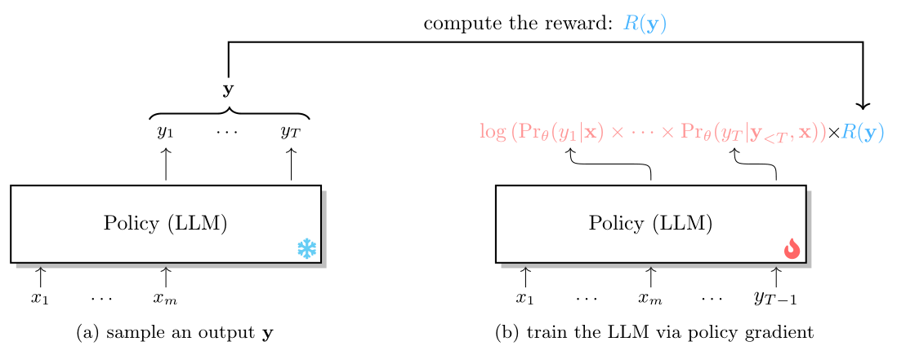
This gives a simple intuition. If a sampled response receives a high reward, the model should increase its probability. If it receives a low reward, the model should reduce its probability. The following subsections refine this basic idea to handle long sequences, noisy rewards, and unstable updates.
3.2 Temporal Decomposition
A generated response is composed of tokens. Therefore, the probability of the full response can be decomposed into token-level probabilities. This allows a sequence-level reward to affect token-level model updates.
Time-step decomposition from the paper
At the \(t\)-th generation step, \(y_t\) does not affect the past-reward term \(\sum_{k=1}^{t-1}r_k\). The paper therefore removes that term and keeps the future return from \(t\) onward.
The difficulty is that sequence-level rewards do not directly tell us which token caused success or failure. A correct answer may contain many ordinary tokens that are not responsible for the reward. An incorrect answer may be wrong because of one early reasoning error. Thus, temporal decomposition gives a mathematical path for training, but it does not fully solve credit assignment.
This issue becomes more important as outputs become longer. In short answers, assigning the same reward to all tokens may be acceptable. In reasoning traces and agent trajectories, a single final reward is too coarse. Later sections therefore discuss process rewards, verifiers, and agentic credit assignment.
3.3 Reducing Gradient Variance
Directly using raw rewards often leads to high-variance gradients. The model may increase the probability of actions simply because they appeared in a generally good trajectory, even if those actions were not better than usual. To reduce this variance, policy-gradient methods introduce baselines and advantages.
Here, \(A(s,a)\) denotes the advantage of taking action \(a\) at state \(s\). \(Q(s,a)\) denotes the expected return after first taking action \(a\) at state \(s\), and \(V(s)\) denotes the expected return from state \(s\) under the policy.
The advantage measures whether an action is better than the expected behavior at the same state. A value model estimates the expected future reward. Subtracting this baseline keeps the expected gradient correct while making the update more stable.
In LLMs, value models are often implemented by reusing a pretrained backbone and adding a scalar head. They resemble reward models architecturally, but their function is different. A reward model evaluates an output. A value model estimates the expected return of a state under the current policy.
| Model | Role in PPO-style RLHF | Updated? |
|---|---|---|
| Policy model | Generates outputs and receives policy-gradient updates. | Yes. |
| Reward model | Scores generated outputs using learned preference signals. | Usually fixed during policy optimization. |
| Value model | Predicts expected return to estimate advantages. | Yes. |
| Reference model | Regularizes the policy and limits excessive drift. | No. |
3.4 Importance Sampling
In practical training, sampled outputs may be generated by an older version of the policy. After several updates, the current policy may assign different probabilities to the same actions. Importance sampling corrects this mismatch by using the probability ratio between the current policy and the old policy.
Here, \(\rho_t(\theta)\) denotes the importance sampling ratio at timestep \(t\). \(\pi_{\theta}\) is the current policy, \(\pi_{\theta_{\mathrm{old}}}\) is the old policy that generated the sampled action, \(s_t\) is the state, and \(a_t\) is the action taken at that state.
This ratio is necessary because data freshness matters. If the learner updates too far from the policy that produced the samples, the samples become less reliable. The paper illustrates this with a poor sampling step that can make subsequent generations worse if the reference policy is not controlled.
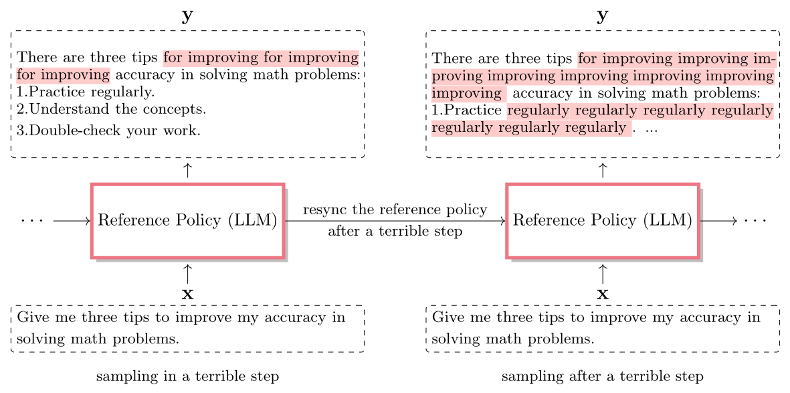
3.5 Proximal Policy Optimization
PPO is a widely used method for stabilizing policy optimization. Its main idea is to prevent the policy from changing too much in a single update. It does this by clipping the importance ratio in the objective function [4].
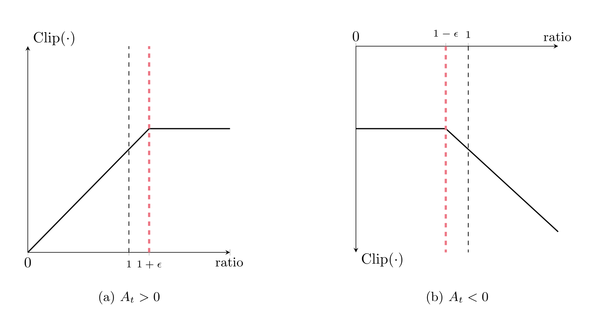
Here, \(\rho_t\) is the probability ratio between the current and old policies, and \(A_t\) is the advantage estimated at timestep \(t\). The clipping range \([1-\epsilon,1+\epsilon]\) limits how much the policy can change in one update.
If the advantage is positive, the model is encouraged to increase the probability of the action, but only within a bounded range. If the advantage is negative, the model is encouraged to reduce the probability, again with a limit. This makes PPO suitable for RLHF, where excessive reward optimization can damage language quality or exploit weaknesses in the reward model.
This is the paper's PPO loss: the clipped advantage term updates the policy, while \(\beta \mathrm{Penalty}_t\) constrains drift from the reference model.
3.6 Training Reward Models
RLHF usually requires a reward model before policy optimization. A reward model maps an input-output pair to a scalar score. It is commonly trained from pairwise preference data, where a human or AI judge chooses the better response among two candidates [5].
Here, \(\mathcal{L}_{\mathrm{RM}}\) denotes the reward model loss, \(r_{\phi}\) is the reward model parameterized by \(\phi\), \(y_w\) is the preferred response, and \(y_l\) is the rejected response for the same input \(x\). The sigmoid function turns the reward difference into a preference probability.
Pairwise comparison is useful because it is easier to collect than absolute numerical scores. Once trained, the reward model can score many newly generated responses, providing a scalable signal for policy optimization.
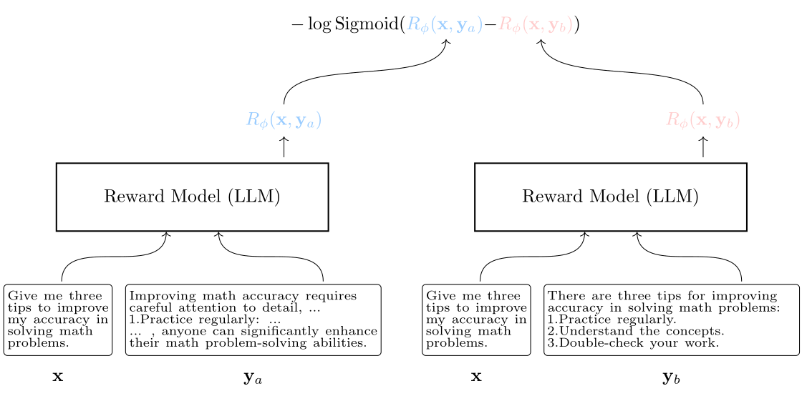
3.7 A Complete Workflow
The section concludes by combining the components into a standard PPO-based RLHF workflow. First, a reward model is trained from preference data. Then the policy samples outputs. The reward model scores these outputs, a value model estimates advantages, and PPO updates the policy under a reference-policy constraint.
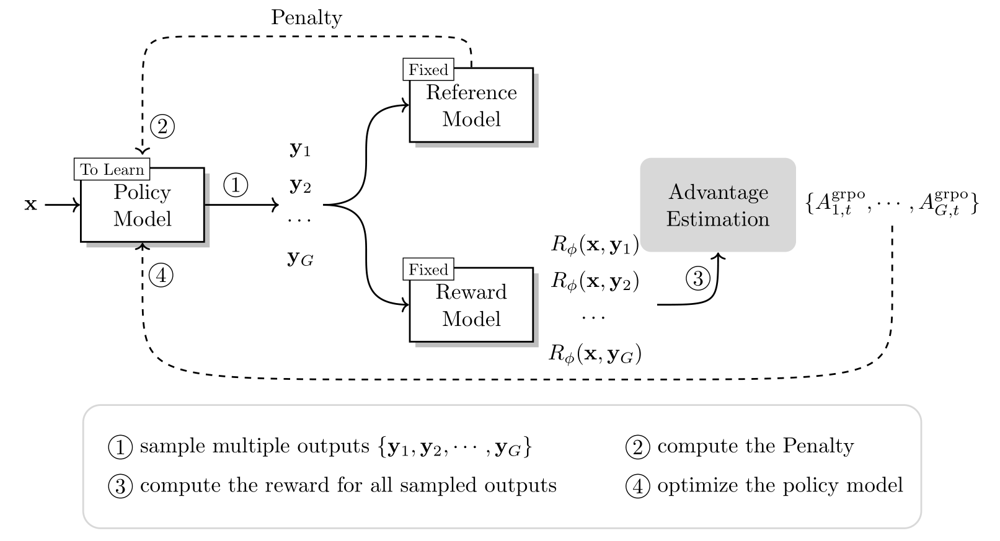
This workflow explains why RLHF is not only an algorithmic objective. It is a training system involving data generation, reward inference, KL regularization, advantage estimation, optimization, and evaluation. Many later methods improve one part of this workflow [2].
Section 4
Improved Reinforcement Learning for LLMs
After introducing the basic RLHF workflow, the paper discusses recent improvements. These methods address four main problems: how to construct better rewards, how to estimate advantages more effectively, how to make RL training more efficient, and how to optimize directly from preferences.
| Problem | Methods Discussed | Main Benefit |
|---|---|---|
| Sparse or weak rewards | Reward shaping, rule-based rewards, process rewards. | Provides denser or more reliable feedback. |
| Reward-model limitations | Generative reward models, rubric-based rewards, reward evaluation. | Improves alignment and evaluation transparency. |
| Expensive or unstable critics | TD, GAE, GRPO, value-free advantage estimation. | Improves the bias-variance and system-cost tradeoff. |
| Pipeline complexity | DPO and related direct preference methods. | Optimizes from preference pairs without an explicit online RL loop. |
4.1 Advanced Reward Models
Reward construction strongly determines what the policy learns. If the reward is sparse, noisy, biased, or easy to exploit, policy optimization may produce behavior that scores well without matching the true objective. Therefore, modern LLM RL places increasing emphasis on reward design.
Automatic preference data generation reduces the dependence on expensive human annotation. Stronger models, rules, or verifiers can provide synthetic comparisons. This increases scale, but it also introduces the risk that the reward inherits the judge's errors or preferences.
Reward shaping adds intermediate signals to a delayed reward. For example, a system may reward valid format, correct intermediate reasoning, or partial task completion. Shaping can make learning easier, but it must be aligned with the final goal. Otherwise the model may optimize the shaped signal rather than the intended behavior.
Reward generalization is another central issue. A reward model trained on a limited distribution may fail when the policy generates new kinds of outputs. Regularization, parameter freezing, ensemble rewards, and data diversity are common methods for reducing reward overfitting.
4.1.4 Generative Reward Models
Traditional reward models often behave like discriminators: they assign scalar scores to outputs. Generative reward models instead formulate preference judgment as a language modeling task. The model receives the prompt, input, and candidate outputs, and generates a label or judgment token [6].
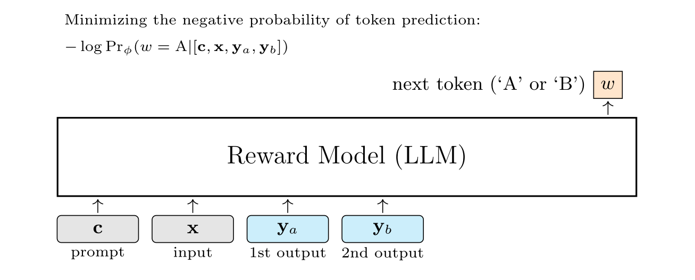
This formulation can leverage the reasoning ability and instruction-following behavior of LLMs. It is especially useful when evaluation requires comparing responses with nuanced criteria rather than only assigning an independent scalar score.
4.1.5 Rubric-based Reward Models
Rubric-based reward models make evaluation criteria explicit. Instead of asking for a single opaque preference, a rubric specifies dimensions such as correctness, completeness, instruction following, safety, style, and evidence. The reward model then evaluates responses according to these criteria.
Rubrics can be holistic, criterion-wise, checklist-based, or hierarchical. A holistic rubric gives an overall judgment based on several criteria. A criterion-wise rubric scores each dimension separately. A checklist rubric decomposes evaluation into atomic conditions. A hierarchical rubric organizes criteria across multiple levels.
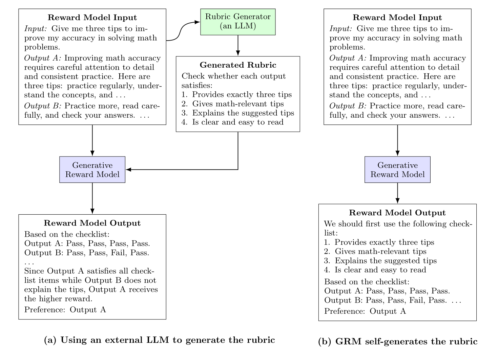
Rubric generation can be manual or automatic. Automatic rubric generation is attractive because it adapts evaluation criteria to each input. The paper also discusses rubric optimization, where rubrics are refined through preference data or RL so that they better distinguish high-quality responses [7].
4.1.6 Reward Model Evaluation
Evaluating reward models is difficult because a reward model is not the final application. It is used to train or select policies. A reward model may perform well on static preference prediction but still fail when a policy learns to exploit it during optimization.
The paper summarizes three evaluation paradigms. RL-based evaluation uses each reward model to train a policy and compares the resulting policies on downstream benchmarks. Pairwise ranking evaluation checks whether the reward model assigns a higher score to the preferred response. Listwise ranking evaluation asks the reward model to select the best response from multiple candidates [8].
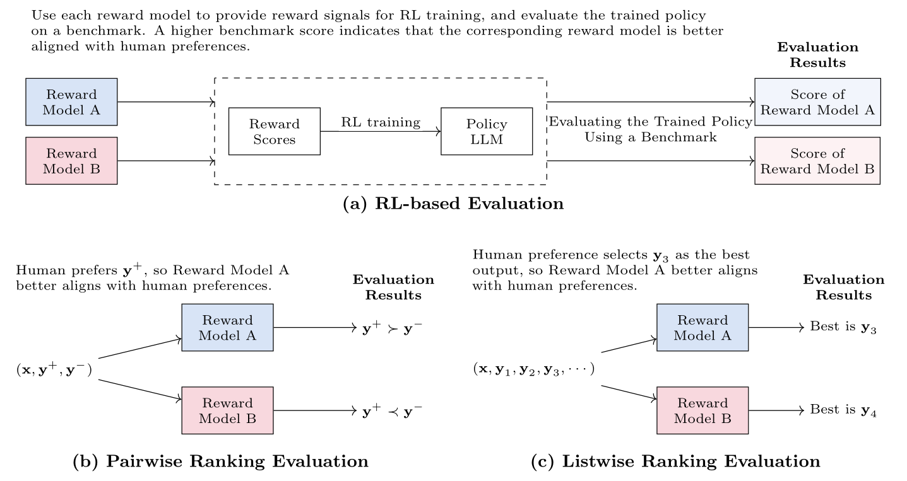
These evaluations answer different questions. Pairwise and listwise ranking are cheaper and easier to scale. RL-based evaluation is more expensive, but it measures the reward model in the setting where it will actually be used. In practice, both static and downstream evaluations are useful.
4.2 Better Advantage Estimation
Advantage estimation balances bias and variance in policy optimization. Monte Carlo estimates can be less biased because they use observed returns, but they often have high variance. Temporal-difference methods reduce variance by bootstrapping from value estimates, but they may introduce bias.
Generalized advantage estimation combines these ideas through a tunable tradeoff. In LLM training, the problem is complicated by long sequences and delayed rewards. A separate critic can estimate token-level values, but training a reliable critic for language can be expensive and unstable [9].
4.2.3 Group Relative Policy Optimization
GRPO addresses this issue by estimating advantages from a group of responses sampled for the same prompt. Instead of relying on a learned value model, it normalizes rewards within the group. A response is considered good if it performs better than other sampled responses to the same input [10].
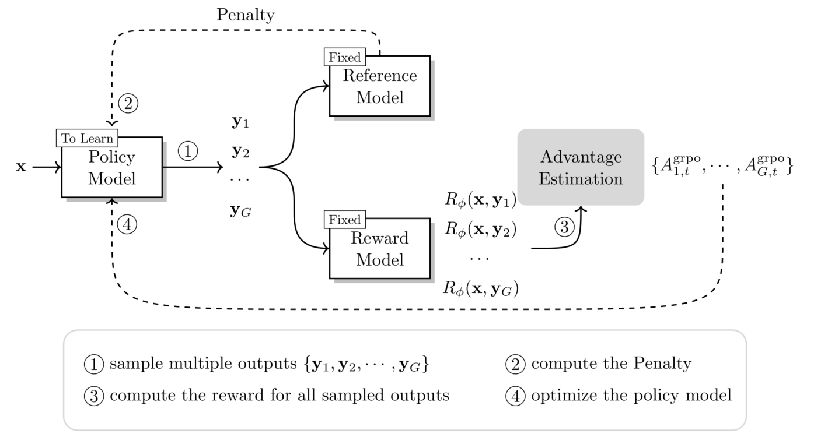
Here, \(G\) is the number of sampled outputs in the group, and \(A_{i,t}^{\mathrm{grpo}}\) is the group-relative advantage used for the \(i\)-th output.
This method is well suited to reasoning tasks, where multiple candidate solutions can be generated and scored by a verifier. The group provides a natural baseline. Removing the critic can simplify training and reduce computational cost.
| Estimator | Uses | Tradeoff |
|---|---|---|
| Monte Carlo | Observed complete returns. | Low bias, high variance. |
| Temporal Difference | Immediate reward plus next value. | Lower variance, possible bias. |
| GAE | Recursive TD errors with gamma and lambda. | Adjustable bias-variance balance. |
| GRPO | Relative rewards within a sampled group. | Avoids a separate value model. |
4.3 Efficient Reinforcement Learning Methods
RL post-training is expensive because it requires generation, scoring, and optimization. Efficient methods therefore aim to reduce wasted computation. Dynamic sampling focuses training on prompts where sampled outputs provide informative reward differences. Lightweight reward methods use rules, verifiers, or smaller models when full reward-model inference is unnecessary.
These methods are especially useful in math, coding, and tool-use tasks, where correctness can sometimes be checked automatically. When reliable rules exist, they can provide cheaper and more stable rewards than learned preference models.
4.4 Direct Preference Optimization
DPO offers a different approach to preference learning. Instead of training a reward model and then applying RL, DPO optimizes the policy directly from preference pairs. This makes training closer to supervised learning and removes the need for an explicit online RL loop in the basic formulation [11].
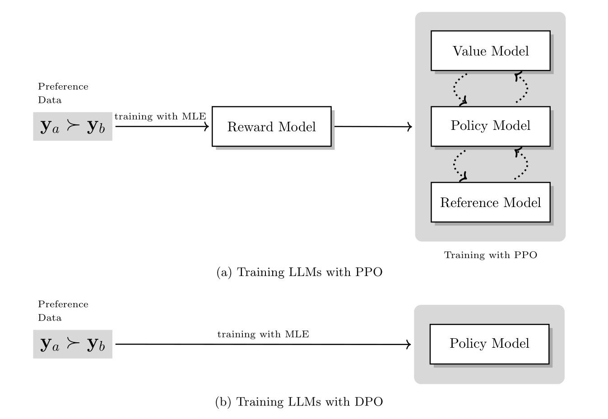
DPO simplifies the pipeline and is often easier to implement. However, it is usually based on fixed preference data, while RL methods can continue sampling from the current policy and learning from newly generated behavior. PPO-style RL and DPO-style preference optimization therefore represent different tradeoffs between exploration, simplicity, and system cost.
Section 5
Reinforcement Learning for LLM Reasoning
Reasoning is a major application of RL for LLMs. Many reasoning tasks provide verifiable feedback: a math answer can be checked, code can be executed against tests, and tool-integrated reasoning can be evaluated through external results. These signals are often sparse, but they are more objective than open-ended preference judgments [12].
5.1 Test-time Scaling
Test-time scaling improves performance by generating multiple candidate reasoning paths and selecting a strong one. Best-of-N sampling is the simplest case. The model samples several responses, a reward model or verifier scores them, and the highest-scoring response is returned.
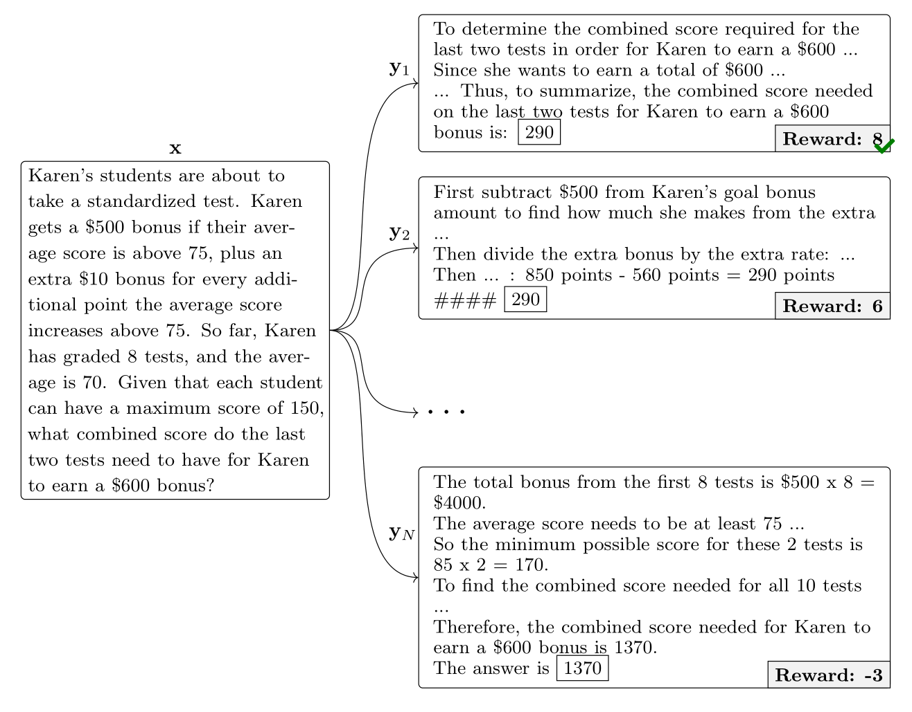
This method also motivates training. If a verifier can reliably identify better candidates at inference time, then RL can use the same signal to make the model generate those candidates more often without requiring large numbers of samples at test time.
5.1.2 Step-by-step Verification
Final-answer rewards may be too sparse for long reasoning chains. Step-by-step verification provides denser feedback by evaluating intermediate reasoning steps. This helps identify where a solution path begins to fail and supports more precise credit assignment [13].
Process reward models can score partial solutions, while greedy or beam-style procedures can extend the most promising paths. This shifts reasoning from one-shot generation toward guided construction of a solution.
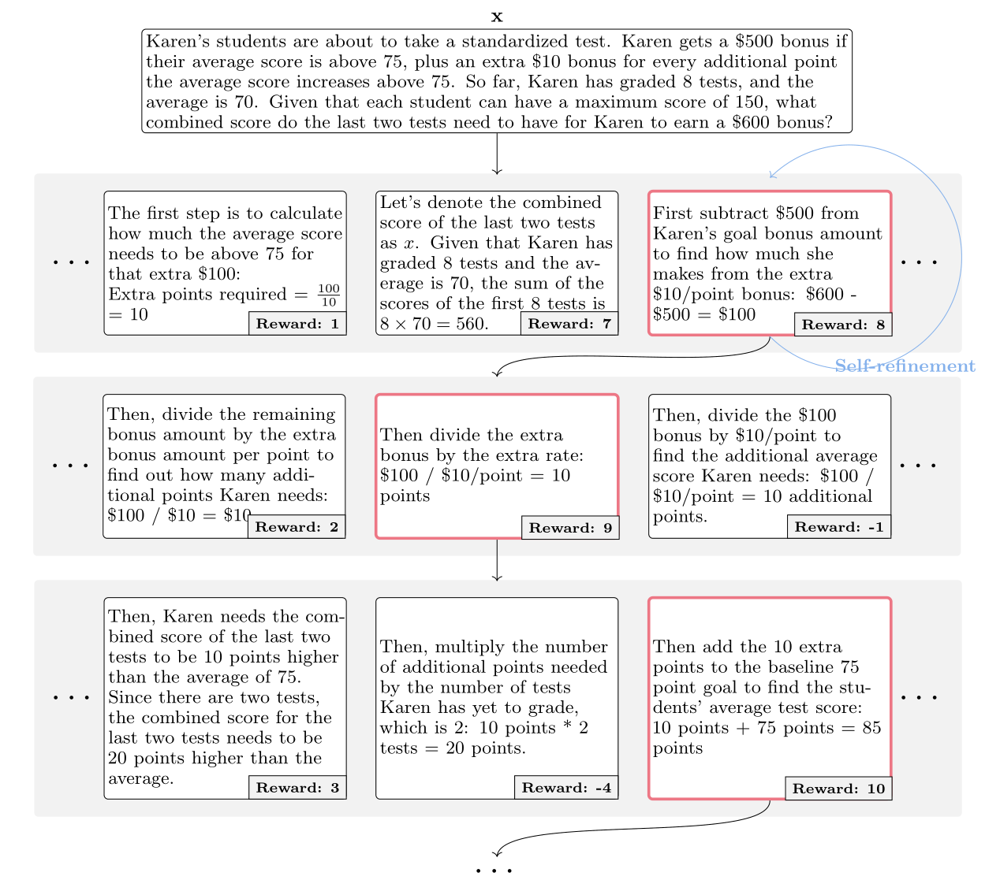
5.1.3 Monte Carlo Tree Search
Monte Carlo Tree Search further formalizes reasoning as search. Nodes represent partial reasoning states, and edges represent candidate next steps. The search process selects promising nodes, expands them, simulates continuations, and backpropagates evaluation results [14].
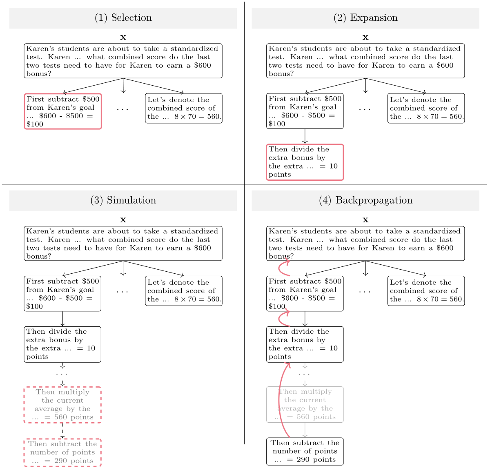
MCTS is useful when the model has enough local reasoning ability to propose candidate steps, but needs search to find a reliable global solution. The verifier or reward model guides the search toward paths with higher expected success.
| Test-time Method | Object Scored | Feedback Granularity |
|---|---|---|
| Best-of-N | Complete sampled outputs. | Outcome-level. |
| Step-by-step verification | Intermediate reasoning steps. | Process-level. |
| MCTS | Partial reasoning states and continuations. | Search-level. |
5.2 Iterative RL
Iterative RL is presented through the DeepSeek-R1 training recipe. Instead of using a simple two-phase SFT-then-RL pipeline, the process is split into several phases with different objectives, so the model can improve reasoning ability while preserving readable and useful behavior.
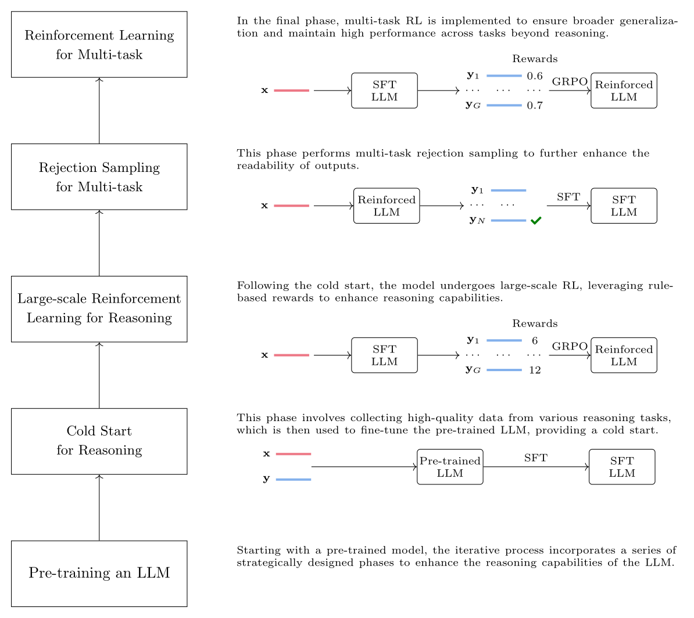
The first phase uses high-quality reasoning data as a cold start. The next phase applies large-scale RL with rule-based rewards such as format checking and answer verification to strengthen reasoning. Because this can hurt readability, rejection sampling and SFT are then used to refine outputs across multiple tasks. A final multi-task RL phase improves generalization with a broader reward model.
5.3 Large-scale Reinforcement Learning
Large-scale reasoning RL expands this loop with many prompts, many sampled solutions, strong verifiers, and large training infrastructure. Scale can improve exploration and make sparse rewards more useful. However, it also increases the need for reliable rewards, stable optimization, and careful monitoring.
The central question is not only whether the model can find correct solutions, but whether RL can make the process of finding them part of the model's learned behavior. This is why reasoning RL has become a major direction in modern LLM research.
5.4 On-Policy Distillation
On-policy distillation keeps the training states on-policy. The student first generates trajectories from its current policy, and the teacher then provides next-token distributional supervision at the states actually visited by the student.
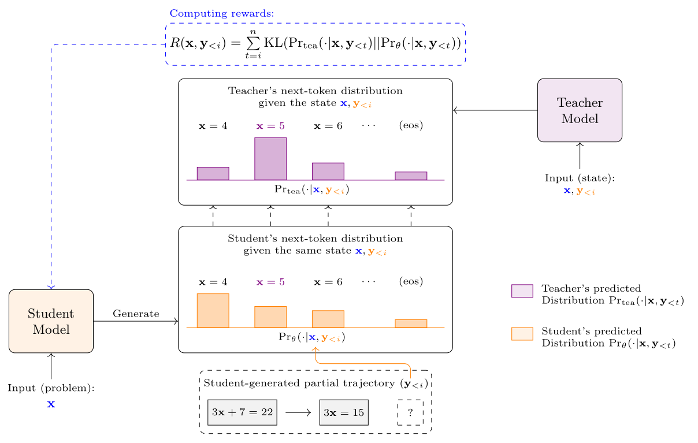
This reduces the mismatch caused by offline distillation from teacher-generated trajectories. In the paper's RL view, the negative KL divergence between teacher and student distributions can be treated as a token-level reward, giving denser feedback than outcome-only supervision.
Section 6
Agentic Reinforcement Learning
Agentic RL extends LLM training from single responses to interactive behavior. An agent must observe the environment, plan, act, call tools, receive feedback, and revise its behavior over multiple steps. This makes the trajectory longer and the reward structure more complex.
| Agent Component | What the Paper Emphasizes | Training Signal |
|---|---|---|
| Planning | Decompose a task into subgoals and executable steps. | Trajectory success and plan quality. |
| Tool use | Select tools, format arguments, interpret observations, and stop appropriately. | Execution correctness, tool appropriateness, and cost. |
| Environment | Provide states, actions, observations, transitions, and verifiers. | Reliable state-based or task-success rewards. |
| Memory and skills | Convert experience into reusable information and behavior. | Future task success after retrieval or skill use. |
6.1 Building Agent Capabilities
The paper focuses on two basic agent capabilities: planning and tool use. Planning decomposes a task into subgoals and action steps. Tool use allows the model to interact with external systems such as search engines, APIs, code interpreters, databases, and software environments.
Supervised planning data can provide an initial scaffold. The data may include environment information, sampled trajectories, trajectory evaluation, and selected demonstrations. RL can then improve the policy through interaction, where the model receives feedback from actual task execution.
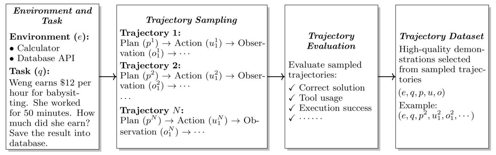
Tool use adds new decisions. The model must choose whether to call a tool, which tool to call, how to format the arguments, how to interpret the returned observation, and when to stop. These decisions can be optimized with rewards based on task success, execution correctness, or intermediate progress [15][16][17].
6.2 Environment Design and Scaling
Environments define what an agent can learn. They specify states, available actions, transition rules, observations, and success criteria. A useful environment should be challenging enough to teach real capabilities, but structured enough to provide reliable feedback.
Manual environment construction is expensive. Therefore, recent work explores synthetic and programmatic environment generation. A typical pipeline defines the environment specification, builds executable components, generates scenarios, lets the agent interact, verifies outcomes, and uses the resulting trajectories for learning [18].
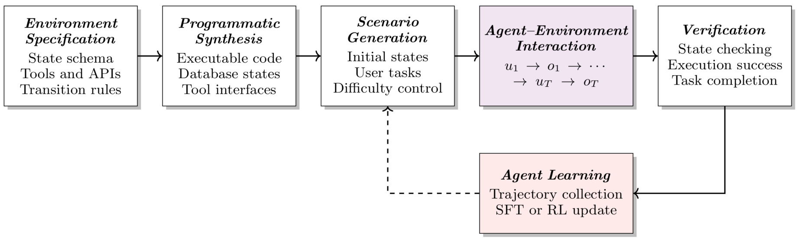
This interaction-learning loop makes agent training different from ordinary dataset training. The agent can continually encounter new tasks, expose weaknesses in its current policy, and collect trajectories that support further improvement.
6.3 Credit Assignment
Agent trajectories often contain many decisions before a final reward is observed. A task may fail because of an early planning error, an incorrect tool argument, a misread observation, or a wrong final answer. Credit assignment determines which parts of the trajectory should receive positive or negative learning signal.
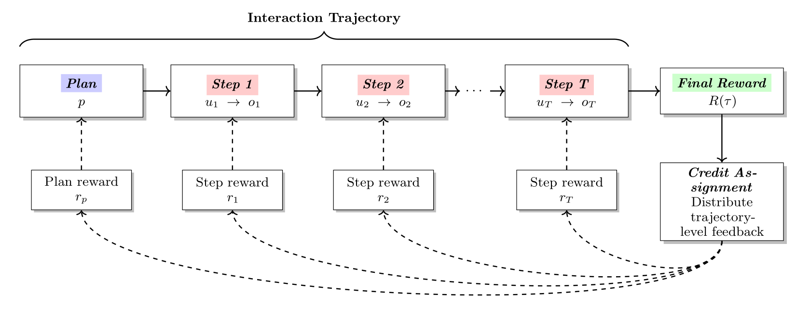
Simple trajectory-level rewards are often too coarse. More informative methods add intermediate rewards, process supervision, step verifiers, or models that evaluate subgoals. The goal is to connect delayed success or failure to the decisions that actually caused it [19].
6.4 Experience Learning
Agentic systems should learn not only from human demonstrations, but also from their own interaction experience. As agents operate in dynamic environments, they collect both successful and failed trajectories. These trajectories can reveal reusable knowledge, recurring solution patterns, and failure modes that are difficult to cover with static supervised data.
The paper describes this shift as moving toward agent self-evolution: the agent improves future behavior by accumulating, organizing, and reusing experience. In the website view, three mechanisms carry most of this section: memory management stores useful information, skill optimization abstracts repeated behaviors into reusable workflows, and trajectory refinement revises agent behavior from feedback.
| Mechanism | What It Keeps From Experience | How It Improves the Agent |
|---|---|---|
| Memory management | User preferences, task facts, successful or failed trajectories. | Retrieves relevant past experience and learns which memories to add, update, delete, or ignore. |
| Skill optimization | Reusable patterns across multiple trajectories. | Turns low-level experience into high-level workflows that guide planning and tool use. |
| Trajectory refinement | Feedback from the current attempt. | Uses reflection or evaluator feedback to revise later attempts, sometimes as in-context policy improvement. |
6.4.1 Memory Management
Memory systems store useful information from past interactions and retrieve it for future tasks. A memory manager must decide what to add, update, delete, or ignore. This is a learning problem because storing too much information can introduce noise, while storing too little prevents transfer from past experience.
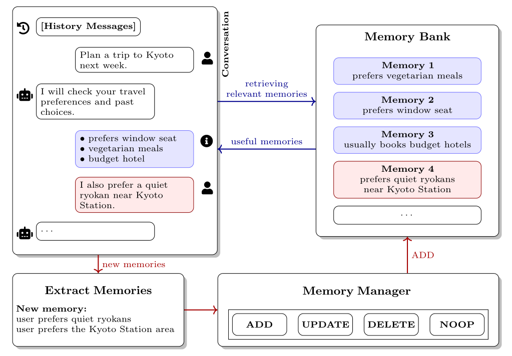
Retrieve relevant memories from the memory bank to support the current interaction.
Extract useful information from the completed interaction for future use.
Integrate new information by adding, revising, deleting, or ignoring memories.
A straightforward memory system can simply retrieve related content and store newly extracted facts. The paper emphasizes that this becomes difficult as experience accumulates: the memory bank may contain redundant, outdated, or contradictory information. A more selective system treats memory maintenance as an operation-selection problem:
These operations create a new memory, revise an existing one, remove an outdated or contradictory one, or leave the memory bank unchanged.
Recent work such as Memory-R1 turns the memory manager itself into a policy optimized by RL [25]. Given an extracted memory and the old memory bank, the manager chooses both an operation and the updated memory content:
Here, \(o\) is the selected memory operation and \(m'\) is the updated memory content. The reward can be defined by downstream task performance, for example \(R_{\mathrm{answer}}=\mathrm{EM}(y_{\mathrm{pred}},y_{\mathrm{gold}})\).
This avoids manually labeling every memory operation. If the updated memory helps the agent answer a future task correctly, the memory manager receives positive feedback; if it hurts the downstream answer, the operation is discouraged. The paper also notes a longer-horizon challenge: some memories may not be useful immediately but can help future tasks, so memory construction itself can be formulated as a sequential decision problem [26].
6.4.2 Skill Optimization
Skill optimization turns repeated successful behaviors into reusable skills. Compared with memory, which stores concrete information from past interactions, a skill is a higher-level instruction package: it can describe when to use a behavior, what workflow to follow, which tools are needed, and how to verify the final result.
During execution, the agent can be given descriptions of available skills and then select the ones most relevant to the current task. The paper writes this retrieval step as:
\(\mathcal{S}\) is the skill bank, \(\mathrm{Score}(x,s_i)\) measures relevance between the task and a skill, and \(\mathcal{S}^{*}\) is the selected skill set.
Manually writing skills can work, but the paper points out that skill quality depends heavily on human design choices. A skill that looks well structured may still fail when another agent tries to use it. SkillRL addresses this by optimizing skill generation according to whether the resulting skills improve actual agent performance [27].
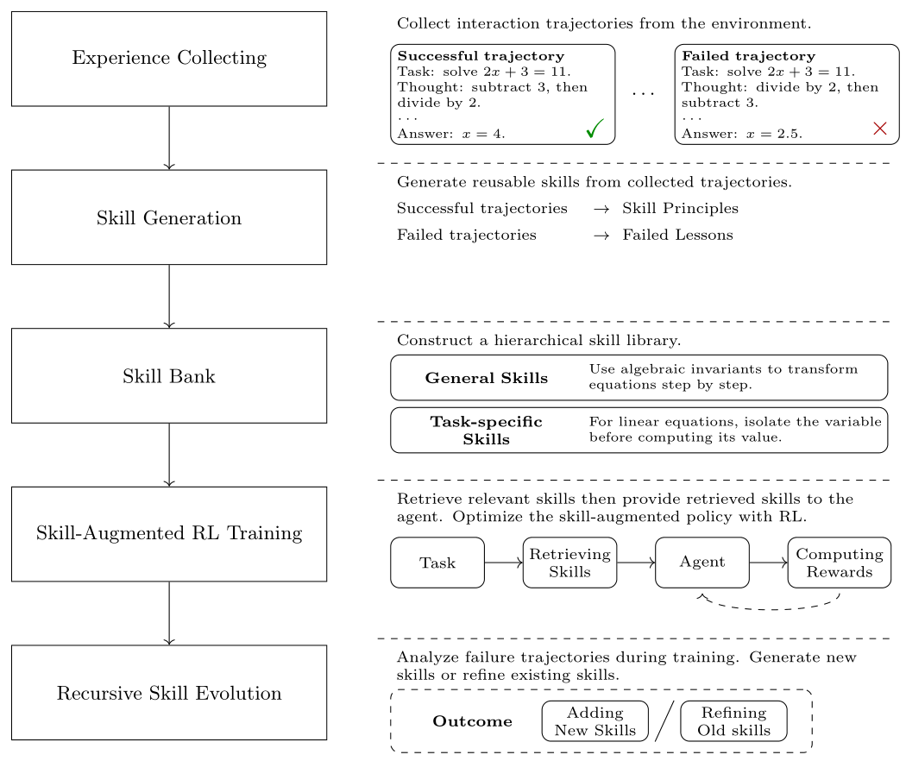
Gather successful and failed trajectories from environments.
Extract reusable skills and initialize a skill bank.
Retrieve relevant skills to guide RL exploration and planning.
Use new trajectories to discover new skills or improve old ones.
This creates a recursive loop. The skill bank gives the agent high-level behavioral priors for RL training, while the improved agent generates better trajectories that further refine the skill bank. In this sense, skill optimization compresses low-level interaction experience into reusable capabilities that can transfer across tasks.
6.4.3 Trajectory Refinement
Trajectory refinement uses feedback from an attempted solution to revise the agent's later behavior. Unlike memory management and skill optimization, which store or abstract experience for future tasks, refinement directly edits the current or next trajectory. This is especially natural for agents because tool execution results and environment states provide feedback during the interaction itself.
Start from a problem or environment goal.
Generate the first reasoning, planning, or tool-use attempt.
Receive a verifier, evaluator, tool, or environment signal.
Turn the feedback into an error analysis or improvement strategy.
Use the reflection to produce a better subsequent attempt.
Reflexion is a representative prompting-based approach: the agent produces an initial trajectory, receives evaluator feedback, writes a reflection, and uses that reflection in subsequent attempts [20]. The paper connects this to step-level feedback as well: outcome-level feedback may only say that the final answer failed, while step-level feedback can identify where the trajectory went wrong and how the agent should revise it.
Prompt-based refinement is useful, but the paper notes two limitations. First, it depends on the pretrained model's native ability to interpret feedback and revise its behavior. Second, it often helps only the current interaction, without turning failed trajectories into transferable experience. Recent work therefore trains agents to acquire refinement ability more explicitly, either through refinement tuning or exploration-based trajectory optimization [28][29].
Section 7
Multimodal Reinforcement Learning
The paper then extends RL beyond text-only LLMs. Multimodal models process and generate information across text, images, video, and audio. Although the model architectures differ, the core RL pattern is similar: sample outputs, evaluate them with rewards, and update the model toward preferred behavior.
| Setting | Policy View | Reward Focus |
|---|---|---|
| Multimodal understanding | Generate answers grounded in visual or multimodal input. | Instruction following, visual faithfulness, factuality, helpfulness, and hallucination avoidance. |
| Diffusion generation | Treat the denoising process as a multi-step trajectory. | Text-image alignment, human preference, safety, or aesthetic quality. |
| Flow matching generation | Discretize a continuous generation path into decision steps. | Reward the final generated sample and optimize the generation process. |
7.1 Multimodal Understanding Models
Multimodal understanding models must answer questions or follow instructions grounded in non-textual input. Rewards may evaluate instruction following, visual faithfulness, factual correctness, helpfulness, and hallucination avoidance. This requires reward models that understand both language and visual content [21].
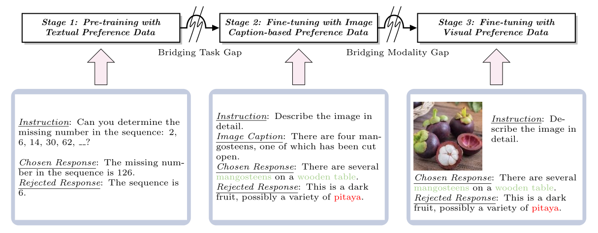
The paper presents visual reward modeling as a natural extension of RLHF. Preference learning remains central, but the evaluated output must be judged against both the instruction and the image. This creates new challenges in data collection, model grounding, and reward generalization.
7.2 Multimodal Generation Models
Multimodal generation models synthesize non-textual content such as images and videos. Unlike multimodal understanding models, which typically still generate text, these models often produce samples through diffusion or continuous transformation processes. Maximum-likelihood or reconstruction-style training can learn high-quality data distributions, but it may not directly optimize high-level user preferences, such as object counts, colors, layouts, visual quality, or prompt satisfaction.
RL is useful here because the generated sample can be evaluated by flexible reward signals from humans, learned reward models, vision-language evaluators, or automatic rules. The main technical question is how to reinterpret the generation process as a trajectory so that policy-gradient-style optimization can connect the final sample reward back to the model's intermediate generation decisions.
7.2.1 Diffusion Models
Diffusion models generate samples through a gradual reverse denoising process. Starting from random noise, the model repeatedly predicts a cleaner latent until it obtains the final image. Standard diffusion training mainly teaches the model to recover the data distribution, but this does not necessarily ensure that the final sample satisfies fine-grained human requirements.
Here, \(\mathbf{z}\) denotes the text prompt, \(\mathbf{x}_0\) is the final generated image, and \(R_{\mathrm{dm}}(\mathbf{x}_0,\mathbf{z})\) is the reward function that evaluates whether the image satisfies the prompt or preference criteria.
The difficulty is that diffusion generation is not autoregressive token generation. Following the formulation described in the paper, the reverse denoising process can instead be viewed as a multi-step MDP. At each step, the current noisy latent and prompt form the state, and the next denoised latent is the action:
Here, \(U_{\theta}\) denotes the learned reverse denoising transition. The denoising trajectory \(\tau_{\mathrm{dm}}=\{\mathbf{x}_T,\mathbf{x}_{T-1},\ldots,\mathbf{x}_0\}\) is treated as the trajectory optimized by RL.
This follows the DPOK-style formulation in the paper: the reverse denoising process is treated as a trajectory, and the final-image reward is used to optimize the log probability of its denoising steps [22].
Under this view, the reward on the final image can be used in a policy-gradient loss over the denoising trajectory [22]. This also allows techniques from LLM alignment to transfer naturally: KL regularization can constrain the model, reference diffusion models can support importance sampling, and group-relative methods can compare multiple generated samples for the same prompt.
7.2.2 Flow Matching Models
Flow matching models generate content by learning a continuous-time flow between a simple prior distribution and the target data distribution. Instead of gradually adding and removing noise as in diffusion models, flow matching learns a velocity field that transports samples along a continuous trajectory.
Here, \(\mathbf{x}_0\) denotes a data sample, \(\mathbf{x}_1\) denotes a noise sample, \(t\in[0,1]\) is the continuous time variable, and \(\mathbf{v}_{\theta}\) is the learned velocity field.
To apply RL, the continuous generation path can be discretized into decision steps. The state includes the prompt, time, and current sample; the action is the next state predicted by the flow model:
Here, \(\mathbf{z}\) is the text condition, \(\Delta t\) is the discretization step, and \(a_t\) denotes the next sample state produced by the generator.
A direct ODE formulation is deterministic, which creates a problem for online RL: policy-gradient methods need stochastic sampling to explore different trajectories and compute transition probabilities. Flow-GRPO addresses this by converting the deterministic flow into an equivalent stochastic differential equation that preserves the marginal distribution while injecting sampling diversity [23].
Here, \(\mu_{\theta}\) is determined by the learned velocity field, \(\sigma_t\) controls sampling stochasticity, \(R_{\mathrm{fm}}\) evaluates the final generated sample, and \(\hat{A}_i\) is computed from the relative reward of one trajectory within a sampled group.
This objective is shown under the Flow-GRPO formulation: the deterministic flow is converted into a stochastic MDP so that online RL can sample trajectories and compute transition probabilities [23].
This makes flow matching compatible with GRPO-style optimization. The model samples multiple generation trajectories for the same condition, evaluates each final sample, normalizes rewards within the group, and updates the generator according to the resulting relative advantages.
The broader message is that RL is becoming a shared optimization interface for foundation models. Once a system can produce candidate outputs and obtain evaluative feedback, many of the same design questions reappear: how to define reward, how to sample efficiently, how to assign credit, and how to avoid reward exploitation.
Section 8
Conclusions and Future Directions
The paper introduces RL from the perspective of LLM research. It begins with basic RL formulations and algorithms, including policy gradients, advantage estimation, importance sampling, and reward modeling. It then discusses recent advances in RL for LLMs and extends the discussion to reasoning models, agentic systems, and multimodal models.
Across these settings, RL has evolved from a general policy optimization framework into a key paradigm for enhancing LLM reasoning, interactive decision-making, and multimodal generation capabilities. At the same time, several directions remain especially important for future exploration.
Appendix
Useful Systems and Datasets
The appendix makes the introduction practical by listing systems, datasets, and environments used in modern RL for LLMs. Systems differ in their support for PPO, GRPO, DPO, multimodal training, asynchronous rollouts, tool calling, and agent environments. Datasets differ in feedback source, scale, modality, and target use case.
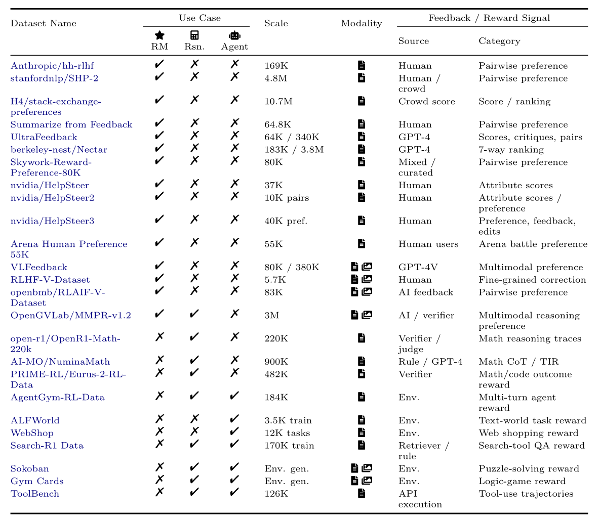
This resource layer makes the introduction more practical. New methods and systems appear quickly, especially around reasoning RL, agentic RL, and multimodal post-training, so the website can give readers a compact entry point into the surrounding ecosystem.
Selected sources
References
- Richard S. Sutton and Andrew G. Barto. Reinforcement Learning: An Introduction (2nd ed.). The MIT Press, 2018.
- Long Ouyang et al. Training language models to follow instructions with human feedback. NeurIPS 2022, 2022.
- Paul F. Christiano et al. Deep reinforcement learning from human preferences. NeurIPS 2017, 2017.
- John Schulman et al. Proximal policy optimization algorithms, 2017.
- Ralph Allan Bradley and Milton E. Terry. Rank analysis of incomplete block designs: I. the method of paired comparisons. Biometrika, 1952.
- Dakota Mahan et al. Generative reward models, 2024.
- Tianci Liu et al. OpenRubrics: Towards scalable synthetic rubric generation for reward modeling and LLM alignment. ACL 2026, 2026.
- Nathan Lambert et al. RewardBench: Evaluating reward models for language modeling. Findings of NAACL 2025, 2025.
- John Schulman et al. High-dimensional continuous control using generalized advantage estimation. ICLR 2016, 2016.
- Zhihong Shao et al. DeepSeekMath: Pushing the limits of mathematical reasoning in open language models, 2024.
- Rafael Rafailov et al. Direct preference optimization: Your language model is secretly a reward model. NeurIPS 2023, 2023.
- DeepSeek. DeepSeek-R1: Incentivizing reasoning capability in LLMs via reinforcement learning, 2025.
- Hunter Lightman et al. Let's verify step by step. ICLR 2024, 2024.
- David Silver et al. Mastering the game of Go without human knowledge. Nature, 2017.
- Shunyu Yao et al. ReAct: Synergizing reasoning and acting in language models. ICLR 2023, 2023.
- Timo Schick et al. Toolformer: Language models can teach themselves to use tools. NeurIPS 2023, 2023.
- Cheng Qian et al. ToolRL: Reward is all tool learning needs. NeurIPS 2025, 2025.
- Mengkang Hu et al. AgentGen: Enhancing planning abilities for large language model based agent via environment and task generation. KDD 2025, 2025.
- Zhiwei Li et al. Encouraging good processes without the need for good answers: Reinforcement learning for LLM agent planning. EMNLP Industry Track 2025, 2025.
- Noah Shinn et al. Reflexion: language agents with verbal reinforcement learning. NeurIPS 2023, 2023.
- Zhiqing Sun et al. Aligning large multimodal models with factually augmented RLHF. Findings of ACL 2024, 2024.
- Ying Fan et al. DPOK: Reinforcement learning for fine-tuning text-to-image diffusion models. NeurIPS 2023, 2023.
- Jie Liu et al. Flow-GRPO: Training flow matching models via online RL. NeurIPS 2025, 2025.
- David Silver, Satinder Singh, Doina Precup, and Richard S. Sutton. Reward is enough. Artificial Intelligence, 2021.
- Sikuan Yan et al. Memory-R1: Enhancing large language model agents to manage and utilize memories via reinforcement learning. ACL 2026, 2026.
- Yu Wang et al. Mem-alpha: Learning memory construction via reinforcement learning, 2025.
- Peng Xia et al. SkillRL: Evolving agents via recursive skill-augmented reinforcement learning, 2026.
- Dayuan Fu et al. AgentRefine: Enhancing agent generalization through refinement tuning. ICLR 2025, 2025.
- Yifan Song et al. Trial and error: Exploration-based trajectory optimization of LLM agents. ACL 2024, 2024.